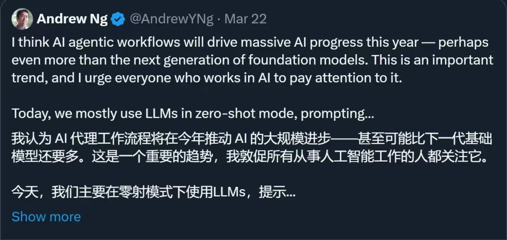
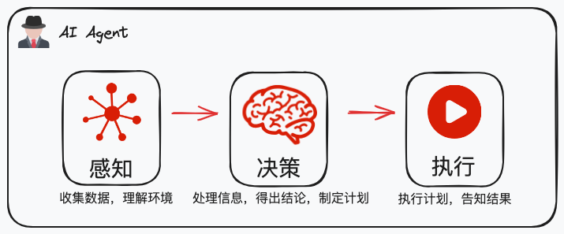
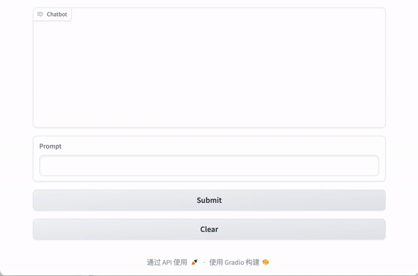

<!DOCTYPE HTML>
<html>
<head><meta name="generator" content="Hexo 3.9.0">
  <meta charset="utf-8">
  <meta http-equiv="X-UA-Compatible" content="IE=edge">
  <meta name="apple-mobile-web-app-capable" content="yes">
  <meta name="apple-mobile-web-app-status-bar-style" content="black">
  <meta name="google-site-verification" content>
  
  <title>Mini AI Agent - 如何用 100 行代码构建一个最小智能体？</title>
  <meta name="author" content="Emac">
   <meta name="description" content="今年 3 月份，知名人工智能科学家吴恩达（Andrew Ng）在社交平台 X 上发帖提到，“我认为 AI 代理工作流程将在今年推动 AI 的大规模进步——甚至可能比下一代基础模型还要多……GPT-3.5（零样本）的正确率为 48.1%，GPT-4（零样本）为 67.0%，而在智能体循环中，GPT-3">
  

  <meta property="og:title" content="Mini AI Agent - 如何用 100 行代码构建一个最小智能体？">
  <meta name="viewport" content="width=device-width, initial-scale=1, maximum-scale=1">
  <meta property="og:site_name" content="Emac">
 <meta property="og:image" content="undefined">
  
  <link href="/apple-touch-icon-precomposed.png" sizes="180x180" rel="apple-touch-icon-precomposed">
  <link rel="alternate" href="/atom.xml" title="Emac" type="application/atom+xml">
  <link rel="stylesheet" href="//cdn.bootcss.com/bootstrap/3.3.6/css/bootstrap.min.css">
  <link rel="stylesheet" href="//cdn.bootcss.com/font-awesome/4.5.0/css/font-awesome.min.css">
  <link rel="stylesheet" href="/css/m.min.css">
  <link rel="icon" type="image/x-icon" href="/favicon.ico">
</head>
</html>
<body>
  <div id='wx_pic' style='display:none;'></div>
  <div id="main">
    <div class="behind">
      <div class="back">
        <a href="/" class="black-color"><i class="fa fa-times" aria-hidden="true"></i></a>
      </div>
      <div class="description">
        &nbsp;拾贝
      </div>
    </div>
    <div class="container">
      

  <article class="standard post">
    <div class="title">
      
  
    <h1 class="page-title center">
        Mini AI Agent - 如何用 100 行代码构建一个最小智能体？
    </h1>
  


    </div>
    <div class="meta center">
      
<time datetime="2024-05-05T09:00:00.000Z">
  <i class="fa fa-calendar"></i>&nbsp;
  2024-05-05
</time>


    
    &nbsp;
    <i class="fa fa-tag"></i>&nbsp;
    <a href="/categories/AI/">AI</a>


    
    &nbsp;
    <i class="fa fa-tag"></i>&nbsp;
    <a href="/tags/原创/">原创</a>·<a href="/tags/LangChain/">LangChain</a>


    </div>
    <hr>
    <div class="picture-container">
      
    </div>
    <blockquote>
<p>今年 3 月份，知名人工智能科学家吴恩达（Andrew Ng）在社交平台 X 上发帖提到，<strong>“我认为 AI 代理工作流程将在今年推动 AI 的大规模进步——甚至可能比下一代基础模型还要多……GPT-3.5（零样本）的正确率为 48.1%，GPT-4（零样本）为 67.0%，而在智能体循环中，GPT-3.5 的正确率高达 95.1%”</strong>。此贴发出之后，引发了业界广泛关注。有人表示，这代表着 AI 发展中的范式转变。</p>
<p></p>
<p>本文首先对智能体（AI Agent）的概念做一个简单介绍，然后详细拆解一个仅用 100 行代码构建的极简智能体应用。</p>
</blockquote>
<h2 id="1-什么是智能体？"><a href="#1-什么是智能体？" class="headerlink" title="1 什么是智能体？"></a>1 什么是智能体？</h2><p><strong>智能体（AI Agent）</strong>是一种超越简单文本生成的人工智能系统，它使用大语言模型（LLM）作为其核心计算引擎，使其能够进行对话、推理、执行任务，展现一定程度的自主性。</p>
<p>在智能体架构中，核心功能可以归纳为三个步骤的循环：<strong>感知-决策-行动</strong>。智能体首先通过感知机制收集环境信息，然后基于该信息和预设目标，通过决策机制制定行动计划，最终通过动作执行机制实施这些计划。</p>
<p></p>
<p><em>图：智能体架构示意</em></p>
<h2 id="2-示例：Mini-AI-Agent"><a href="#2-示例：Mini-AI-Agent" class="headerlink" title="2 示例：Mini AI Agent"></a>2 示例：Mini AI Agent</h2><p>了解了智能体的概念，接下来我们一起一步步拆解一个仅用 100 行代码构建的最小智能体应用，耗时约 1 个小时。</p>
<h3 id="2-1-效果演示"><a href="#2-1-效果演示" class="headerlink" title="2.1 效果演示"></a>2.1 效果演示</h3><p>先来看一下效果演示，</p>
<p></p>
<p><em>图：Mini AI Agent应用演示</em></p>
<p>看似平淡无奇的两次问答，实际上已经体现了智能体的核心循环：感知-决策-行动。</p>
<ul>
<li>感知：接收问题</li>
<li>决策：理解问题，确定目标，然后通过推理决定使用何种工具（即制定计划）</li>
<li>行动：使用工具获取信息，然后生成答案</li>
</ul>
<h3 id="2-2-环境准备"><a href="#2-2-环境准备" class="headerlink" title="2.2 环境准备"></a>2.2 环境准备</h3><h4 id="申请账号：百度千帆"><a href="#申请账号：百度千帆" class="headerlink" title="申请账号：百度千帆"></a>申请账号：百度千帆</h4><ol>
<li>访问<a href="https://cloud.baidu.com/product/wenxinworkshop" target="_blank" rel="noopener">百度智能云千帆</a>，注册账号并登录<a href="https://console.bce.baidu.com/qianfan/overview" target="_blank" rel="noopener">千帆大模型控制台</a></li>
<li>打开模型服务-应用接入页面，创建应用，记下 API Key 和 Secret Key 备用</li>
<li>打开模型服务-在线服务页面，找到 ERNIE-3.5-8K（支持函数功能），开通付费（不用担心，非常便宜，100 次调用才 2 毛钱）</li>
</ol>
<p>PS: 本文只是以百度千帆为例，大家可以根据自身经验，替换成其他任何支持函数功能的大模型，比如智谱清言、Azure、OpenAI等。</p>
<h4 id="搭建本地开发环境：Jupyter-Notebook"><a href="#搭建本地开发环境：Jupyter-Notebook" class="headerlink" title="搭建本地开发环境：Jupyter Notebook"></a>搭建本地开发环境：Jupyter Notebook</h4><ol>
<li>访问 <a href="https://www.anaconda.com/download/success" target="_blank" rel="noopener">Anaconda 官网</a>，下载安装包并安装 Anaconda</li>
<li>命令行运行 <code>conda install jupyter notebook</code>，安装  Jupyter Notebook</li>
<li>打开 GitHub 示例项目 <a href="https://github.com/emac/langchain-samples" target="_blank" rel="noopener">emac/langchain-samples</a>，git clone 到本地</li>
<li>命令行打开 langchain-samples 目录，运行 <code>jupyter notebook</code>，打开  Jupyter Notebook</li>
</ol>
<h3 id="2-3-程序拆解"><a href="#2-3-程序拆解" class="headerlink" title="2.3 程序拆解"></a>2.3 程序拆解</h3><p>准备好环境之后，就可以进入程序员最喜欢的实操环节了！</p>
<h4 id="安装依赖"><a href="#安装依赖" class="headerlink" title="安装依赖"></a>安装依赖</h4><figure class="highlight cmd"><table><tr><td class="gutter"><pre><span class="line">1</span><br></pre></td><td class="code"><pre><span class="line">!pip install langchain langchain-community langchain-core gradio</span><br></pre></td></tr></table></figure>
<p>依赖说明：</p>
<ul>
<li><a href="https://github.com/langchain-ai/langchain" target="_blank" rel="noopener">langchain</a>: 最著名的开发大语言模型应用的开源框架，没有之一</li>
<li><a href="https://www.gradio.app/" target="_blank" rel="noopener">gradio</a>: 一个用于快速构建机器学习模型的交互式 Web 应用的 Python 库</li>
</ul>
<h4 id="初始化大模型"><a href="#初始化大模型" class="headerlink" title="初始化大模型"></a>初始化大模型</h4><figure class="highlight python"><table><tr><td class="gutter"><pre><span class="line">1</span><br><span class="line">2</span><br><span class="line">3</span><br><span class="line">4</span><br><span class="line">5</span><br><span class="line">6</span><br><span class="line">7</span><br><span class="line">8</span><br><span class="line">9</span><br><span class="line">10</span><br><span class="line">11</span><br><span class="line">12</span><br><span class="line">13</span><br></pre></td><td class="code"><pre><span class="line"><span class="keyword">from</span> langchain_community.llms <span class="keyword">import</span> QianfanLLMEndpoint</span><br><span class="line"><span class="keyword">import</span> os</span><br><span class="line"></span><br><span class="line">print(<span class="string">"# 初始化千帆"</span>)</span><br><span class="line">os.environ[<span class="string">"QIANFAN_AK"</span>]=<span class="string">'千帆应用的 API Key'</span></span><br><span class="line">os.environ[<span class="string">"QIANFAN_SK"</span>]=<span class="string">'千帆应用的 Secret Key'</span></span><br><span class="line"></span><br><span class="line">llm = QianfanLLMEndpoint(streaming=<span class="literal">True</span>,</span><br><span class="line">                         model=<span class="string">"ERNIE-3.5-8K"</span>,</span><br><span class="line">                         temperature=<span class="number">0.1</span>)</span><br><span class="line"></span><br><span class="line">response = llm.invoke(<span class="string">"上海春天一般哪个月开始？"</span>)</span><br><span class="line">print(response)</span><br></pre></td></tr></table></figure>
<p>执行之前先替换之前记录的千帆应用的 API Key 和 Secret Key。</p>
<p>程序解读：</p>
<ol>
<li>初始化环境变量，创建一个千帆 LLM 实例</li>
<li>发起（人生）第一次大模型 API 调用，如果不成功则返回检查环境和依赖</li>
</ol>
<h4 id="定义函数"><a href="#定义函数" class="headerlink" title="定义函数"></a>定义函数</h4><figure class="highlight python"><table><tr><td class="gutter"><pre><span class="line">1</span><br><span class="line">2</span><br><span class="line">3</span><br><span class="line">4</span><br><span class="line">5</span><br><span class="line">6</span><br><span class="line">7</span><br><span class="line">8</span><br><span class="line">9</span><br><span class="line">10</span><br><span class="line">11</span><br><span class="line">12</span><br><span class="line">13</span><br><span class="line">14</span><br><span class="line">15</span><br><span class="line">16</span><br><span class="line">17</span><br><span class="line">18</span><br><span class="line">19</span><br><span class="line">20</span><br><span class="line">21</span><br><span class="line">22</span><br><span class="line">23</span><br><span class="line">24</span><br><span class="line">25</span><br><span class="line">26</span><br><span class="line">27</span><br><span class="line">28</span><br><span class="line">29</span><br><span class="line">30</span><br><span class="line">31</span><br><span class="line">32</span><br><span class="line">33</span><br><span class="line">34</span><br><span class="line">35</span><br><span class="line">36</span><br><span class="line">37</span><br><span class="line">38</span><br><span class="line">39</span><br><span class="line">40</span><br><span class="line">41</span><br><span class="line">42</span><br><span class="line">43</span><br><span class="line">44</span><br><span class="line">45</span><br><span class="line">46</span><br><span class="line">47</span><br><span class="line">48</span><br><span class="line">49</span><br><span class="line">50</span><br><span class="line">51</span><br><span class="line">52</span><br><span class="line">53</span><br><span class="line">54</span><br></pre></td><td class="code"><pre><span class="line"><span class="keyword">from</span> langchain <span class="keyword">import</span> PromptTemplate, LLMChain</span><br><span class="line"><span class="keyword">from</span> langchain.chains <span class="keyword">import</span> LLMRequestsChain</span><br><span class="line"><span class="keyword">from</span> langchain_core.tools <span class="keyword">import</span> tool</span><br><span class="line"><span class="keyword">from</span> langchain_core.utils.function_calling <span class="keyword">import</span> convert_to_openai_tool</span><br><span class="line"></span><br><span class="line">print(<span class="string">"# 定义函数"</span>)</span><br><span class="line"><span class="meta">@tool</span></span><br><span class="line"><span class="function"><span class="keyword">def</span> <span class="title">search_ip</span><span class="params">(question:str, ip:str)</span> -&gt; str:</span></span><br><span class="line">    <span class="string">"""</span></span><br><span class="line"><span class="string">    首先获取输入的IP地址的位置信息，然后回答输入的问题</span></span><br><span class="line"><span class="string">    @param question: 问题</span></span><br><span class="line"><span class="string">    @param ip: IP地址</span></span><br><span class="line"><span class="string">    """</span></span><br><span class="line">    prompt_template = <span class="string">"""以下是IP地址'&#123;ip&#125;'的位置信息：</span></span><br><span class="line"><span class="string">    &gt;&gt;&gt; &#123;requests_result&#125; &lt;&lt;&lt;</span></span><br><span class="line"><span class="string">    根据以上位置信息，回答以下这个问题：</span></span><br><span class="line"><span class="string">    &gt;&gt;&gt; &#123;question&#125; &lt;&lt;&lt;"""</span></span><br><span class="line">    prompt = PromptTemplate(</span><br><span class="line">        input_variables=[<span class="string">"question"</span>, <span class="string">"ip"</span>, <span class="string">"requests_result"</span>],</span><br><span class="line">        template=prompt_template</span><br><span class="line">    )</span><br><span class="line">    chain = LLMRequestsChain(llm_chain = LLMChain(llm=llm, prompt=prompt))</span><br><span class="line">    inputs = &#123;</span><br><span class="line">        <span class="string">"question"</span>: question,</span><br><span class="line">        <span class="string">"ip"</span>: ip,</span><br><span class="line">        <span class="string">"url"</span>: <span class="string">"https://api.songzixian.com/api/ip?dataSource=generic_ip&amp;ip="</span> + ip</span><br><span class="line">    &#125;</span><br><span class="line">    <span class="keyword">return</span> chain.invoke(inputs)</span><br><span class="line"></span><br><span class="line"><span class="meta">@tool</span></span><br><span class="line"><span class="function"><span class="keyword">def</span> <span class="title">search_phone</span><span class="params">(question:str, phone:str)</span> -&gt; str:</span></span><br><span class="line">    <span class="string">"""</span></span><br><span class="line"><span class="string">    首先获取输入的手机号码的归属地信息，然后回答输入的问题</span></span><br><span class="line"><span class="string">    @param question: 问题</span></span><br><span class="line"><span class="string">    @param phone: 手机号码</span></span><br><span class="line"><span class="string">    """</span></span><br><span class="line">    prompt_template = <span class="string">"""以下是手机号码'&#123;phone&#125;'的归属地信息：</span></span><br><span class="line"><span class="string">    &gt;&gt;&gt; &#123;requests_result&#125; &lt;&lt;&lt;</span></span><br><span class="line"><span class="string">    根据以上归属地信息，回答以下这个问题：</span></span><br><span class="line"><span class="string">    &gt;&gt;&gt; &#123;question&#125; &lt;&lt;&lt;"""</span></span><br><span class="line">    prompt = PromptTemplate(</span><br><span class="line">        input_variables=[<span class="string">"question"</span>, <span class="string">"phone"</span>, <span class="string">"requests_result"</span>],</span><br><span class="line">        template=prompt_template</span><br><span class="line">    )</span><br><span class="line">    chain = LLMRequestsChain(llm_chain = LLMChain(llm=llm, prompt=prompt))</span><br><span class="line">    inputs = &#123;</span><br><span class="line">        <span class="string">"question"</span>: question,</span><br><span class="line">        <span class="string">"phone"</span>: phone,</span><br><span class="line">        <span class="string">"url"</span>: <span class="string">"https://api.songzixian.com/api/phone-location?dataSource=phone_number_location&amp;phoneNumber="</span> + phone</span><br><span class="line">    &#125;</span><br><span class="line">    <span class="keyword">return</span> chain.invoke(inputs)</span><br><span class="line"></span><br><span class="line">functions=[convert_to_openai_tool(search_ip)[<span class="string">'function'</span>],convert_to_openai_tool(search_phone)[<span class="string">'function'</span>]]</span><br><span class="line">print(functions)</span><br></pre></td></tr></table></figure>
<p>程序解读：</p>
<ul>
<li><p>定义 <code>search_ip</code> 和 <code>search_phone</code> 两个工具函数，背后连接一个免费的第三方 API 接口平台，用来获取指定 IP 的位置信息和指定手机号的归属地信息，然后再结合原始问题，通过大模型生成最终回答。</p>
</li>
<li><p>tool/ convert_to_openai_tool: 用于生成函数定义的注解和工具方法</p>
</li>
<li><p><a href="https://python.langchain.com/docs/modules/model_io/prompts/quick_start/#prompttemplate" target="_blank" rel="noopener">PromptTemplate</a>: Prompt 模板，支持变量</p>
</li>
<li><p><a href="https://python.langchain.com/docs/use_cases/apis/#going-deeper" target="_blank" rel="noopener">LLMRequestsChain</a>: 一个基于 URL 请求的大模型链，先调用 URL 获取数据，然后将数据传给一个已绑定 Prompt 的大模型链获取答案</p>
</li>
</ul>
<h4 id="绑定函数"><a href="#绑定函数" class="headerlink" title="绑定函数"></a>绑定函数</h4><figure class="highlight python"><table><tr><td class="gutter"><pre><span class="line">1</span><br><span class="line">2</span><br><span class="line">3</span><br><span class="line">4</span><br><span class="line">5</span><br><span class="line">6</span><br><span class="line">7</span><br><span class="line">8</span><br><span class="line">9</span><br><span class="line">10</span><br><span class="line">11</span><br><span class="line">12</span><br><span class="line">13</span><br><span class="line">14</span><br><span class="line">15</span><br><span class="line">16</span><br><span class="line">17</span><br><span class="line">18</span><br><span class="line">19</span><br><span class="line">20</span><br><span class="line">21</span><br><span class="line">22</span><br><span class="line">23</span><br><span class="line">24</span><br><span class="line">25</span><br><span class="line">26</span><br><span class="line">27</span><br></pre></td><td class="code"><pre><span class="line"><span class="keyword">from</span> langchain.schema <span class="keyword">import</span> HumanMessage</span><br><span class="line"><span class="keyword">from</span> langchain_community.chat_models <span class="keyword">import</span> QianfanChatEndpoint</span><br><span class="line"><span class="keyword">import</span> json</span><br><span class="line"></span><br><span class="line"><span class="comment"># 此处不能设定streaming=True，否则无法激活函数回调</span></span><br><span class="line">chat = QianfanChatEndpoint(model=<span class="string">"ERNIE-3.5-8K"</span>,</span><br><span class="line">                          temperature=<span class="number">0.1</span>)</span><br><span class="line"></span><br><span class="line"><span class="function"><span class="keyword">def</span> <span class="title">get_response</span><span class="params">(message)</span>:</span></span><br><span class="line">    print(<span class="string">"# 绑定函数"</span>)</span><br><span class="line">    result = chat.invoke([HumanMessage(content=message)],</span><br><span class="line">                               functions=functions)</span><br><span class="line">    print(result)</span><br><span class="line"></span><br><span class="line">    function_call_info = result.additional_kwargs.get(<span class="string">"function_call"</span>, <span class="literal">None</span>)</span><br><span class="line">    print(function_call_info)</span><br><span class="line">    </span><br><span class="line">    <span class="keyword">if</span> <span class="keyword">not</span> function_call_info:</span><br><span class="line">        print(<span class="string">"# 直接返回"</span>)</span><br><span class="line">        <span class="keyword">return</span> result.content</span><br><span class="line"></span><br><span class="line">    print(<span class="string">"# 调用函数"</span>)</span><br><span class="line">    function_name = function_call_info[<span class="string">"name"</span>]</span><br><span class="line">    function_args = json.loads(function_call_info[<span class="string">"arguments"</span>])</span><br><span class="line">    function_result = eval(function_name)(function_args)</span><br><span class="line">    print(function_result)</span><br><span class="line">    <span class="keyword">return</span> function_result[<span class="string">"output"</span>]</span><br></pre></td></tr></table></figure>
<p>程序解读：</p>
<ul>
<li>创建一个千帆 Chat 实例，绑定之前定义的两个函数，传入用户输入的问题（对应智能体的<strong>感受</strong>环节），然后发起调用，根据调用结果执行不同任务（对应智能体的<strong>决策</strong>环节）：<ul>
<li>如果调用结果没有提示函数调用（<code>result.additional_kwargs.get(&quot;function_call&quot;, None)</code>），则直接返回结果</li>
<li>否则，根据大模型提示的函数名和请求参数，通过反射调用相应的函数（对应智能体的<strong>执行</strong>环节），然后返回结果</li>
</ul>
</li>
</ul>
<h4 id="构建应用"><a href="#构建应用" class="headerlink" title="构建应用"></a>构建应用</h4><figure class="highlight python"><table><tr><td class="gutter"><pre><span class="line">1</span><br><span class="line">2</span><br><span class="line">3</span><br><span class="line">4</span><br><span class="line">5</span><br><span class="line">6</span><br><span class="line">7</span><br><span class="line">8</span><br><span class="line">9</span><br><span class="line">10</span><br><span class="line">11</span><br><span class="line">12</span><br><span class="line">13</span><br><span class="line">14</span><br><span class="line">15</span><br><span class="line">16</span><br><span class="line">17</span><br><span class="line">18</span><br><span class="line">19</span><br><span class="line">20</span><br></pre></td><td class="code"><pre><span class="line"><span class="keyword">import</span> gradio <span class="keyword">as</span> gr</span><br><span class="line"></span><br><span class="line"><span class="function"><span class="keyword">def</span> <span class="title">submit</span><span class="params">(message, chat_history)</span>:</span></span><br><span class="line">    bot_message = get_response(message)</span><br><span class="line">    <span class="comment"># 保存历史对话记录，用于显示</span></span><br><span class="line">    chat_history.append((message, bot_message))</span><br><span class="line">    <span class="keyword">return</span> <span class="string">""</span>, chat_history</span><br><span class="line"></span><br><span class="line">print(<span class="string">"# 创建交互"</span>)</span><br><span class="line"><span class="keyword">with</span> gr.Blocks() <span class="keyword">as</span> demo:</span><br><span class="line">    chatbot = gr.Chatbot(height=<span class="number">240</span>) <span class="comment"># 对话框</span></span><br><span class="line">    msg = gr.Textbox(label=<span class="string">"Prompt"</span>) <span class="comment"># 输入框</span></span><br><span class="line">    submitBtn = gr.Button(<span class="string">"Submit"</span>) <span class="comment"># 提交按钮</span></span><br><span class="line">    clearBtn = gr.ClearButton([msg, chatbot]) <span class="comment"># 清除按钮</span></span><br><span class="line">    <span class="comment"># 提交</span></span><br><span class="line">    msg.submit(submit, inputs=[msg, chatbot], outputs=[msg, chatbot]) </span><br><span class="line">    submitBtn.click(submit, inputs=[msg, chatbot], outputs=[msg, chatbot])</span><br><span class="line">    </span><br><span class="line">gr.close_all()</span><br><span class="line">demo.launch()</span><br></pre></td></tr></table></figure>
<p>程序解读：</p>
<ul>
<li>创建智能体应用，构建一个用户和智能体的对话框，将用户输入的消息传给后台创建的大模型，实时获取响应</li>
<li>此处可以看到，借助 Gradio 框架，短短几行代码，就可以构建出一个简洁的对话框应用，非常 Nice!</li>
</ul>
<p>至此，一个极简的智能体应用就构建成功了，前后仅用 100 行代码。完整代码参见 <a href="https://github.com/emac/langchain-samples/blob/main/mini-ai-agent.ipynb" target="_blank" rel="noopener">GitHub</a>。</p>
<h4 id="彩蛋：智能体如何思考？"><a href="#彩蛋：智能体如何思考？" class="headerlink" title="彩蛋：智能体如何思考？"></a>彩蛋：智能体如何思考？</h4><p>看完演示，拆解完程序，你可能对智能体里的<strong>“智能“</strong>两字的理解还是有点模模糊糊。其实要真正理解这一点，光看程序还不够，得看下大模型的响应结果（见下）。注意其中 <code>response_metadata</code> 有一个很有意思的 <code>thoughts</code> 字段，其代表了大模型的思考过程，是不是和人类非常类似？</p>
<figure class="highlight"><table><tr><td class="gutter"><pre><span class="line">1</span><br><span class="line">2</span><br><span class="line">3</span><br><span class="line">4</span><br><span class="line">5</span><br></pre></td><td class="code"><pre><span class="line"># 问题：120.230.93.202属于哪个城市？</span><br><span class="line"># 大模型响应结果</span><br><span class="line">additional_kwargs=&#123;'finish_reason': 'function_call', 'request_id': 'as-fcd0dz2mmg', 'object': 'chat.completion', 'search_info': [], 'function_call': &#123;'name': 'search_ip', 'arguments': '&#123;"question":"120.230.93.202属于哪个城市？","ip":"120.230.93.202"&#125;'&#125;&#125; </span><br><span class="line"></span><br><span class="line">response_metadata=&#123;'token_usage': &#123;'prompt_tokens': 194, 'completion_tokens': 63, 'total_tokens': 257&#125;, 'model_name': 'ERNIE-3.5-8K', 'finish_reason': 'function_call', 'id': 'as-fcd0dz2mmg', 'object': 'chat.completion', 'created': 1714900176, 'result': '', 'is_truncated': False, 'need_clear_history': False, 'function_call': &#123;'name': 'search_ip', 'thoughts': '用户想要知道一个特定IP地址的地理位置信息，我需要使用search_ip工具来获取这个信息。', 'arguments': '&#123;"question":"120.230.93.202属于哪个城市？","ip":"120.230.93.202"&#125;'&#125;, 'usage': &#123;'prompt_tokens': 194, 'completion_tokens': 63, 'total_tokens': 257&#125;&#125; id='run-0706ab6f-a21f-4352-bbb1-1f1a0f13c426-0'</span><br></pre></td></tr></table></figure>
<h2 id="3-小结"><a href="#3-小结" class="headerlink" title="3 小结"></a>3 小结</h2><p>本文基于百度千帆大模型，使用 Langchain 和 Gradio 框架，用短短 100 行代码就构建出一个极简的智能体应用。该应用能够根据用户问题，选择不同的工具获取信息，并生成最终回答，体现了智能体最核心的三步循环：感知-决策-行动。基于这个演示应用，相信聪明的你可以构建出更复杂、更智能的智能体应用，欢迎<a href="https://github.com/emac/emac.github.io/issues" target="_blank" rel="noopener">留言</a>交流。</p>
<h2 id="4-参考"><a href="#4-参考" class="headerlink" title="4 参考"></a>4 参考</h2><ul>
<li><a href="https://mp.weixin.qq.com/s/WOI-owwovML5g2olnO28GQ" target="_blank" rel="noopener">吴恩达：别光盯着GPT-5，用GPT-4做个智能体可能提前达到GPT-5的效果</a></li>
</ul>


  </article>
  </script>


    </div>
  </div>
  <footer class="page-footer"><div class="clearfix">
</div>
<div class="right-foot container">
    <div class="firstrow">
        <a href="#top" >
        <i class="fa fa-arrow-right"></i>
        </a>
        © emacoo.cn 2015-2024
    </div>
    <div class="secondrow">
        <a href="https://github.com/gaoryrt/hexo-theme-pln">
        
        </a>
    </div>
</div>
<div class="clearfix">
</div>
<script async src="//busuanzi.ibruce.info/busuanzi/2.3/busuanzi.pure.mini.js"></script>
<div class="busuanzi center">
    <span id="busuanzi_container_site_pv">本站总访问量<span id="busuanzi_value_site_pv"></span>次</span>
    <span id="busuanzi_container_site_uv">本站访客数<span id="busuanzi_value_site_uv"></span>人次</span>
    <span id="busuanzi_container_page_pv">
      本文总阅读量<span id="busuanzi_value_page_pv"></span>次
    </span>
</div>
</footer>
  <script src="//cdn.bootcss.com/jquery/2.2.1/jquery.min.js"></script>
<script src="/js/search.js"></script>
<script type="text/javascript">

// comments below to disable loading animation
function revealOnScroll() {
  var scrolled = $(window).scrollTop();
  $(".excerpt, .index-title, .index-meta, p").each(function() {
    var current = $(this),
      height = $(window).outerHeight(),
      offsetTop = current.offset().top;
    (scrolled + height + 50 > offsetTop) ? current.addClass("animation"):'';
  });
}
$(window).on("scroll", revealOnScroll);
$(document).ready(revealOnScroll)

// disqus scripts


// dropdown scripts
$(".dropdown").click(function(event) {
  var current = $(this);
  event.stopPropagation();
  $(current).children(".dropdown-content")[($(current).children(".dropdown-content").hasClass("open"))?'removeClass':'addClass']("open")
});
$(document).click(function(){
    $(".dropdown-content").removeClass("open");
})

// back to top scripts
$("a[href='#top']").click(function() {
  $("html, body").animate({ scrollTop: 0 }, 500);
  return false;
});


var path = "/search.xml";
searchFunc(path, 'local-search-input', 'local-search-result');

</script>

</body>
</html>
